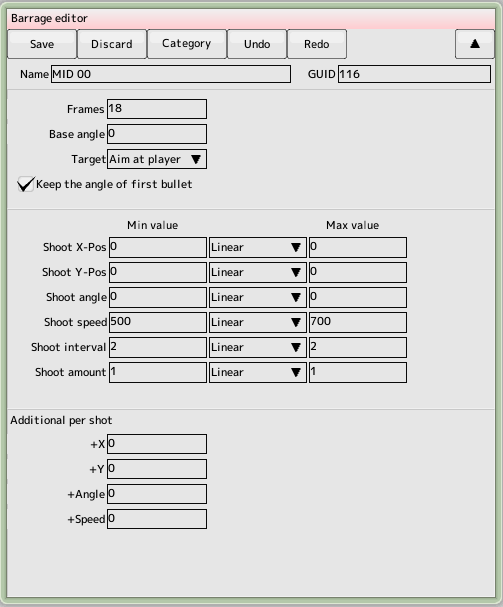

back to the original page
back to the original page

- Lifetime (number of frames)
This is the amount of time, in frames, before the barrage ends
- Target
Specifies the direction and offset angle of the target.
- Britain's direction will be 0 degrees
- Direction of travel
The direction the character is moving will be 0 degrees
- Fixed direction
Bottom of the screen will be 0 degrees
- Your direction
The direction your character is facing will be 0 degrees
- Keep the angle of the first bullet
When aiming at a moving target, the angle of the first bullet and thereafter changes and the angle of the first bullet is maintained. It will If you check, the angle of the first bullet is applied to all subsequent bullets
- Minimum and maximum values
As a barrage parameter, some of the values that are set have a certain range There are three parameters (e.g. injection position and direction). When specifying these parameters, the minimum value, the maximum value and the calculation method are specified
- Random
Randomly choose a value from minimum to maximum
- Linear
It gradually varies from the minimum value immediately after the start to the maximum value. The maximum value is reached in the same amount of time as the lifetime
- Sine wave
Varies with the same period as the sine wave (sine wave). The initial value is the median of the minimum and maximum value
- Offset value for injection position XY
Offset value for injection position
- Injection angle
Offset value of the injection angle
- Injection speed
Injection speed in absolute value
- Injection Interval
Injection and Injection Interval, per frame
- Ejection rate
Specifies the number of bullets to be ejected in one shot
The following parameters are parameters that change with each shot in simultaneous injection
- XY
Ejection position is changed with each shot
- Angle
Ejection angle for each shot
- Interval
Varying the interval between each shot
Back to the top of the page